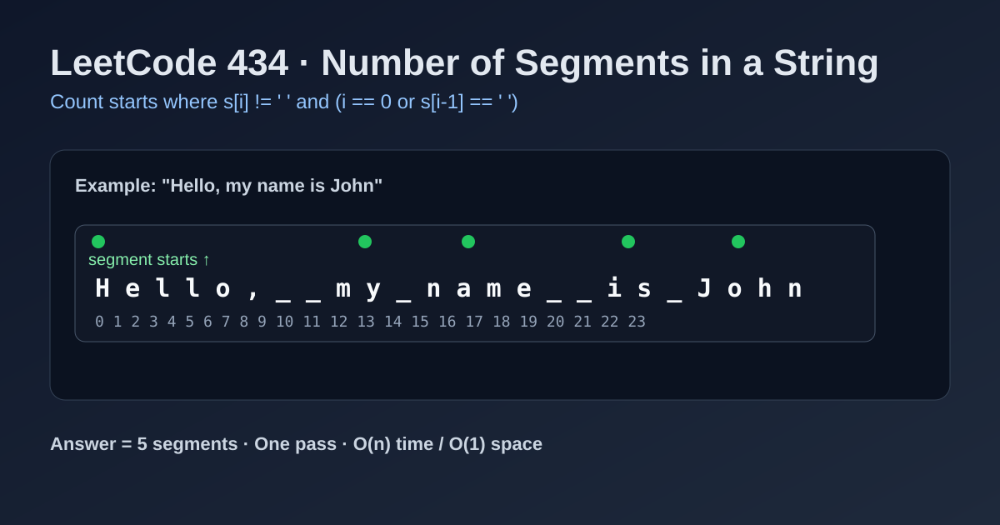

LeetCode 434: Number of Segments in a String (Segment Start Counting)
LeetCode 434StringCountingBoundary DetectionToday we solve LeetCode 434 - Number of Segments in a String.
Source: https://leetcode.com/problems/number-of-segments-in-a-string/

English
Problem Summary
Given a string s, count how many segments it has. A segment is a contiguous non-space character sequence.
Key Insight
A new segment starts exactly at positions where s[i] != ' ' and either i == 0 or s[i - 1] == ' '. Count these starts.
Brute Force and Limitations
Splitting by spaces and filtering empty strings works, but creates extra arrays and intermediate strings. Direct scanning is cleaner and uses constant space.
Optimal Algorithm Steps
1) Initialize answer count = 0.
2) Traverse indices i in s.
3) If current char is not space and previous char is space (or i == 0), increment count.
4) Return count.
Complexity Analysis
Time: O(n).
Space: O(1).
Common Pitfalls
- Treating every non-space char as a new segment.
- Forgetting the i == 0 case.
- Mishandling consecutive spaces.
Reference Implementations (Java / Go / C++ / Python / JavaScript)
class Solution {
public int countSegments(String s) {
int count = 0;
for (int i = 0; i < s.length(); i++) {
if (s.charAt(i) != ' ' && (i == 0 || s.charAt(i - 1) == ' ')) {
count++;
}
}
return count;
}
}func countSegments(s string) int {
count := 0
for i := 0; i < len(s); i++ {
if s[i] != ' ' && (i == 0 || s[i-1] == ' ') {
count++
}
}
return count
}class Solution {
public:
int countSegments(string s) {
int count = 0;
for (int i = 0; i < (int)s.size(); i++) {
if (s[i] != ' ' && (i == 0 || s[i - 1] == ' ')) {
count++;
}
}
return count;
}
};class Solution:
def countSegments(self, s: str) -> int:
count = 0
for i, ch in enumerate(s):
if ch != ' ' and (i == 0 or s[i - 1] == ' '):
count += 1
return countvar countSegments = function(s) {
let count = 0;
for (let i = 0; i < s.length; i++) {
if (s[i] !== ' ' && (i === 0 || s[i - 1] === ' ')) {
count++;
}
}
return count;
};中文
题目概述
给定字符串 s，统计其中有多少个“单词段（segment）”。segment 定义为一段连续的非空格字符。
核心思路
当且仅当 s[i] != ' ' 且（i == 0 或 s[i - 1] == ' '）时，位置 i 是一个新 segment 的起点。统计起点个数即可。
暴力解法与不足
可以先按空格切分，再过滤空字符串计数；但会产生额外数组和字符串对象。直接扫描原串更省空间、更直接。
最优算法步骤
1）初始化 count = 0。
2）遍历字符串每个下标 i。
3）若当前是非空格且前一位是空格（或 i == 0），则 count++。
4）返回 count。
复杂度分析
时间复杂度：O(n)。
空间复杂度：O(1)。
常见陷阱
- 把每个非空格字符都误算成新段。
- 忽略 i == 0 的起点判断。
- 连续空格处理不当导致重复计数。
多语言参考实现（Java / Go / C++ / Python / JavaScript）
class Solution {
public int countSegments(String s) {
int count = 0;
for (int i = 0; i < s.length(); i++) {
if (s.charAt(i) != ' ' && (i == 0 || s.charAt(i - 1) == ' ')) {
count++;
}
}
return count;
}
}func countSegments(s string) int {
count := 0
for i := 0; i < len(s); i++ {
if s[i] != ' ' && (i == 0 || s[i-1] == ' ') {
count++
}
}
return count
}class Solution {
public:
int countSegments(string s) {
int count = 0;
for (int i = 0; i < (int)s.size(); i++) {
if (s[i] != ' ' && (i == 0 || s[i - 1] == ' ')) {
count++;
}
}
return count;
}
};class Solution:
def countSegments(self, s: str) -> int:
count = 0
for i, ch in enumerate(s):
if ch != ' ' and (i == 0 or s[i - 1] == ' '):
count += 1
return countvar countSegments = function(s) {
let count = 0;
for (let i = 0; i < s.length; i++) {
if (s[i] !== ' ' && (i === 0 || s[i - 1] === ' ')) {
count++;
}
}
return count;
};
Comments